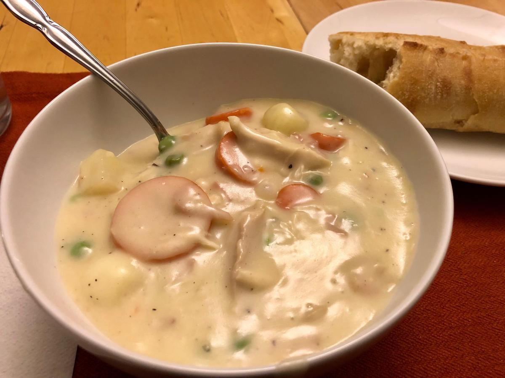

Based on Chrissy Teigen Cravings, pg. 51-52 (and recipe for crackers)
Personal rating: 3 / 5

6 cups low sodium chicken broth
2 cups whole milk
2 sticks unsalted butter, cut into chunks
2 Tbsp minced garlic (3 cloves)
1 cup flour
2 tsp salt
1.5 tsp ground pepper
1 large russet potato, peeled and 1/2 inch cubes
1/2 lb (2 cups) carrots, diced
1 cup frozen peas
1 cup frozen peas, green beans, or pearl onions
1/4 lb deli ham, sliced
1 lb (3 cups) rotisserie chicken, cubed -or- >1 lb boneless, skinless chicken thighs cooked and shredded
1/2 cup heavy cream